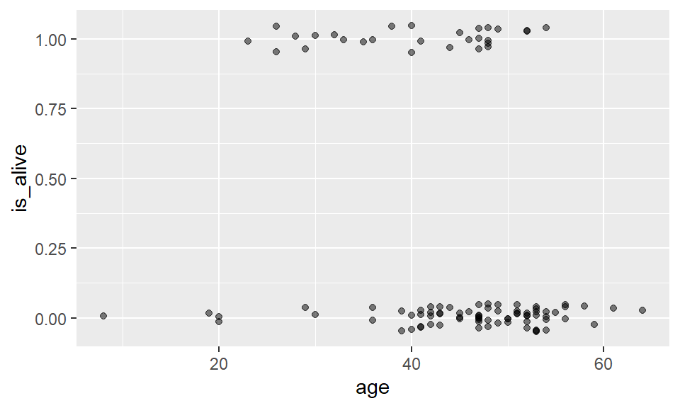
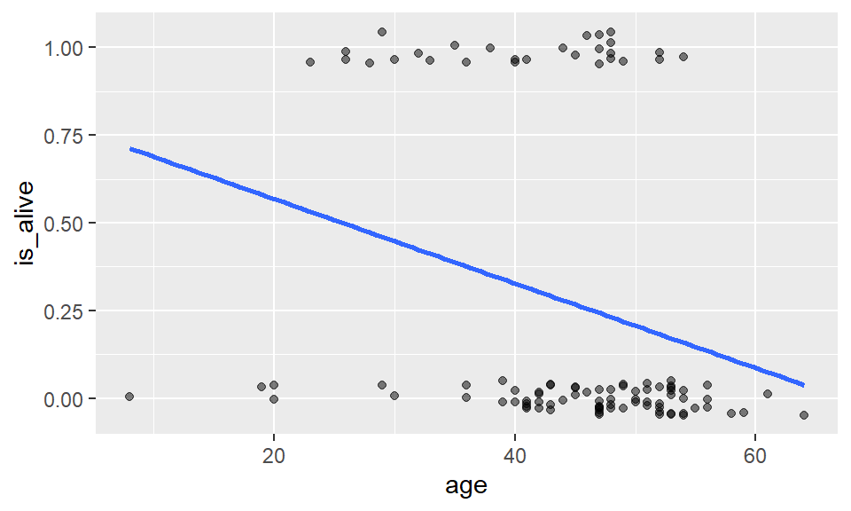
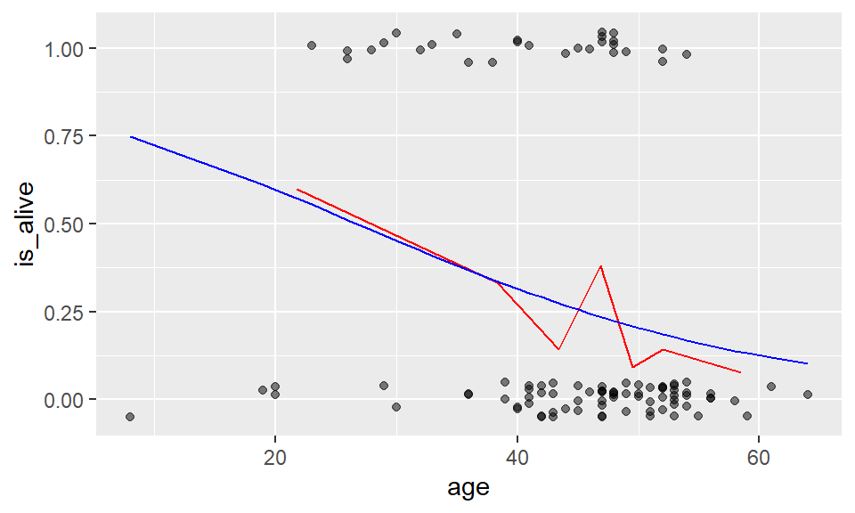

Welcome to Generalized Linear Models
Welcome to this interactive tutorial on logistic regression and generalized linear models (GLMs)!
What You’ll Learn
By the end of this tutorial, you will be able to:
- Understand when to use logistic regression - Recognize situations where a binary outcome variable requires a different modeling approach than linear regression
- Build logistic regression models in R - Use the
glm()function with the appropriate family argument to fit models for binary outcomes - Interpret coefficients on different scales - Convert between and interpret results on the log-odds, odds, and probability scales
- Make predictions - Generate both probabilistic and binary predictions for new observations
- Evaluate model performance - Create and interpret confusion matrices to assess prediction accuracy
- Apply multiple predictors - Extend simple logistic regression to include multiple explanatory variables
Real-World Applications
Throughout this tutorial, you’ll work with two compelling datasets: - Stanford Heart Transplant Study: Modeling 5-year survival rates of heart transplant patients - Medical School Admissions: Predicting acceptance based on student GPA
Let’s get started!
Introduction to Generalized Linear Models
Beyond Linear Regression
So far in your statistical journey, you’ve primarily worked with linear regression, where the response variable is continuous and approximately normally distributed. But what happens when your response variable doesn’t meet these assumptions?
- What if you want to predict whether a student gets accepted or rejected (binary outcome)?
- What if you’re counting the number of emails received per day (count data)?
- What if you’re modeling survival time (positive and skewed)?
This is where Generalized Linear Models (GLMs) come to the rescue!
The GLM Framework
Generalized Linear Models extend the linear regression framework to accommodate response variables from different probability distributions. The key innovation is the use of a link function that transforms the response variable to connect it with a linear combination of predictors.
The GLM Structure:
\[E(Y) = g^{-1}(\beta_0 + \beta_1 x_1 + \beta_2 x_2 + \ldots)\]
Where \(g\) is the link function that maps the expected value of Y to the linear predictor.
Common Types of GLMs
Different response variable types call for different GLM families:
| Response Type | GLM Family | Link Function | Example |
|---|---|---|---|
| Binary (0/1) | Binomial | Logit | Disease diagnosis (yes/no) |
| Binary (0/1) | Binomial | Probit | Pass/fail outcomes |
| Binary (0/1) | Binomial | Cloglog | Rare events (e.g., equipment failure) |
| Count (0, 1, 2, …) | Poisson | Log | Number of customer complaints |
| Continuous (positive) | Gamma | Log | Insurance claim amounts |
Focus on Binary Outcomes
In this tutorial, we’ll focus on modeling binary outcomes using the binomial family of GLMs. The most common approach is logistic regression, which uses the logit link function:
\[\text{logit}(p) = \log\left(\frac{p}{1-p}\right) = \beta_0 + \beta_1 x_1 + \ldots\]
This ensures that predicted probabilities always fall between 0 and 1—a critical requirement!
Alternative Link Functions for Binary Data
While logistic regression is the most popular choice for binary outcomes, two alternatives exist:
Probit Regression uses the inverse cumulative distribution function of the standard normal distribution as its link. It’s particularly useful when you believe the underlying latent process follows a normal distribution (common in psychology and economics). The probit and logit models often give similar results, but probit is sometimes preferred for theoretical reasons, ease of interpretation, or just convention of the area in which it is used.
Complementary Log-Log (Cloglog) is designed for situations where one outcome is much rarer than the other, or when the data arise from a survival or time-to-event process measured in discrete time intervals.
In R, you can specify these alternatives using:
# Logistic regression (default)
glm(y ~ x, data = mydata, family = binomial(link = "logit"))
# Probit regression
glm(y ~ x, data = mydata, family = binomial(link = "probit"))
# Complementary log-log
glm(y ~ x, data = mydata, family = binomial(link = "cloglog"))For this tutorial, we’ll stick with logistic regression as it’s the most widely used and its coefficients have an intuitive interpretation in terms of odds ratios.
Logistic Regression
In this lesson you’ll learn about using logistic regression, a generalized linear model (GLM), to predict a binary outcome and classify observations.
What is logistic regression?
Thus far, we have only built models for a numeric response variable.
A categorical response variable
A well-known Stanford University study on heart transplants tracked the five-year survival rate of patients with dire heart ailments. The purpose of the study was to assess the efficacy of heart transplants, but for right now we will simply focus on modeling the survival rates of these patients. This plot illustrates how those patients who were older when the study began were more likely to be dead when the study ended (five years later).
Note that we have used the geom_jitter() function to
create the illusion of separation in our data. Because the y value is
categorical, all of the points would either lie exactly on “dead” or
“alive”, making the individual points hard to see. To counteract this,
geom_jitter() will move the points a small random amount up
or down.
If you fit a regression line to these data, what would it look like?
ggplot(data = heart_transplant, aes(x = age, y = survived)) +
geom_jitter(width = 0, height = 0.05, alpha = 0.5)
Making a binary variable
First, we have a technical problem, in that the levels of our
response variable are labels, and you can’t build a regression model to
a variable that consists of words! We can get around this by creating a
new variable that is binary (either 0 or 1), based on whether the
patient survived to the end of the study. We call this new
variable is_alive.
heart_transplant <- heart_transplant |>
mutate(is_alive = ifelse(survived == "alive", 1, 0))Visualizing a binary response
We can then visualize our data_space. The vertical axis
can now be thought of as the probability of being alive at the end of
the study, given one’s age at the beginning.
data_space <- ggplot(data = heart_transplant, aes(x = age, y = is_alive)) +
geom_jitter(width = 0, height = 0.05, alpha = 0.5)
data_spaceRegression with a binary response
Now there is nothing preventing us from fitting a simple linear regression model to these data, and in fact, in certain cases this may be an appropriate thing to do.
But it’s not hard to see that the line doesn’t fit very well. There are other problems as well…
data_space +
geom_smooth(method = "lm", se = FALSE)
Limitations of regression
- Could make nonsensical predictions
- Binary response problematic
What would this model predict as the probability of a 70-year-old patient being alive? It would be a number less than zero, which doesn’t make sense as a probability. Because the regression line always extends to infinity in either direction, it will make predictions that are not between 0 and 1, sometimes even for reasonable values of the explanatory variable.
Second, the variability in a binary response may violate a number of other assumptions that we make when we do inference in multiple regression. You’ll learn about those assumptions in the tutorial on inference for regression.
Generalized linear models
Thankfully, a modeling framework exists that generalizes regression to include response variables that are non-normally distributed. This family is called generalized linear models or GLMs for short. One member of the family of GLMs is called logistic regression, and this is the one that models a binary response variable.
A full treatment of GLMs is beyond the scope of this tutorial, but the basic idea is that you apply a so-called link function to appropriately transform the scale of the response variable to match the output of a linear model. The link function used by logistic regression is the logit function. This constrains the fitted values of the model to always lie between 0 and 1, as a valid probability must.
In this lesson we will cover:
- generalization of multiple regression
- model non-normal responses
- special case: logistic regression
- models binary response
- uses \(logit\) link function
- \(logit(p) = \log{ \left( \frac{p}{1-p} \right) } = \beta_0 + \beta_1 \cdot x\)
Fitting a GLM
##
## Call: glm(formula = is_alive ~ age, family = binomial, data = heart_transplant)
##
## Coefficients:
## (Intercept) age
## 1.56438 -0.05847
##
## Degrees of Freedom: 102 Total (i.e. Null); 101 Residual
## Null Deviance: 120.5
## Residual Deviance: 113.7 AIC: 117.7##
## Family: binomial
## Link function: logitFitting a GLM in R requires only two small changes from fitting a
regression model using lm(). First, the function is called
glm() instead of lm(). Second, we have to
specify which kind of GLM we want using the family argument.
For logistic regression, we specify the binomial family,
which uses the logit link function.
Fitting a line to a binary response
When our response variable is binary, a regression model has several limitations. Among the more obvious - and logically incongruous - is that the regression line extends infinitely in either direction. This means that even though our response variable \(y\) only takes on the values 0 and 1, our fitted values \(\hat{y}\) can range anywhere from \(-\infty\) to \(\infty\). This doesn’t make sense.
To see this in action, we’ll fit a linear regression model to data about 55 students who applied to medical school. We want to understand how their undergraduate \(GPA\) relates to the probability they will be accepted by a particular school \((Acceptance)\).
The medical school acceptance data is loaded as
MedGPA.
- Create a scatterplot called
data_spaceforAcceptanceas a function ofGPA. Usegeom_jitter()to apply a small amount of jitter to the points in the \(y\)-direction by settingwidth = 0andheight = 0.05. - Use
geom_smooth()to add the simple linear regression line todata_space.
# scatterplot with jitter
data_space <- ggplot(___) +
geom_jitter(width = ___, height = ___, alpha = 0.5)
# linear regression line
data_space +
___ In `geom_smooth()` define the `method` and `se` arguments for a straight line fit without the standard error band.# scatterplot with jitter
data_space <- ggplot(data = MedGPA, aes(y = Acceptance, x = GPA)) +
geom_jitter(width = 0, height = 0.05, alpha = 0.5)
# linear regression line
data_space +
geom_smooth(method = "lm", se = FALSE)Fitting a line to a binary response (2)
In the previous exercise, we identified a major limitation to fitting a linear regression model when we have a binary response variable. However, it is not always inappropriate to do so. Note that our regression line only makes illogical predictions (i.e. \(\hat{y} \lt 0\) or \(\hat{y} \gt 1\)) for students with very high or very low GPAs. For GPAs closer to average, the predictions seem fine.
Moreover, the alternative logistic regression model - which we will fit next - is very similar to the linear regression model for observations near the average of the explanatory variable. It just so happens that the logistic curve is very straight near its middle. Thus, in these cases a linear regression model may still be acceptable, even for a binary response.
- Use
filter()to find the subset of the observations inMedGPAwhose GPAs are between 3.375 and 3.77, inclusive. - Create a scatterplot called
data_spaceforAcceptanceas a function ofGPAfor only those observations. Usegeom_jitter()to apply0.05jitter to the points in the \(y\)-direction and no jitter to the \(x\) direction. - Use
geom_smooth()to add only the simple linear regression line todata_space.
# filter
MedGPA_middle <- ___
# scatterplot with jitter
data_space <- ggplot(___) +
geom_jitter(width = ___, height = ___, alpha = 0.5)
# linear regression line
data_space +
___MedGPA_middle <- MedGPA |>
filter(GPA >= ___, GPA <= ___)data_space +
geom_smooth(method = "lm", se = FALSE)# filter
MedGPA_middle <- MedGPA |>
filter(GPA >= 3.375, GPA <= 3.770)
# scatterplot with jitter
data_space <- ggplot(data = MedGPA_middle, aes(y = Acceptance, x = GPA)) +
geom_jitter(width = 0, height = 0.05, alpha = 0.5)
# linear regression line
data_space +
geom_smooth(method = "lm", se = FALSE)Fitting a model
Logistic regression is a special case of a broader class of generalized linear models, often known as GLMs. Specifying a logistic regression model is very similar to specify a regression model, with two important differences:
- We use the
glm()function instead oflm() - We specify the
familyargument and set it tobinomial. This tells the GLM function that we want to fit a logistic regression model to our binary response. The terminology stems from the assumption that our binary response follows a what is called a binomial distribution.
We still use the formula and data arguments
with glm().
Note that the mathematical model is now: \[ \log{ \left( \frac{y}{1-y} \right) } = \beta_0 + \beta_1 \cdot x + \epsilon \,, \] where \(\epsilon\) is the error term.
Use glm() to fit a logistic regression model for
Acceptance as a function of GPA.
# fit model
glm(___, data = ___, family = ___) The only difference in syntax for `lm()` and `glm()` is that in `glm()` you also have to specify `family = binomial`.# fit model
glm(Acceptance ~ GPA, data = MedGPA, family = binomial)Visualizing logistic regression
The data space
data_space <- ggplot(data = heart_transplant, aes(x = age, y = is_alive)) +
geom_jitter(width = 0, height = 0.05, alpha = 0.5)
data_space
Let’s return to our heart transplant data. In the data space, we can see the relationship between age and our binary response variable: whether the patient was alive when the study ended. Here again we’ve added some jitter and transparency to the points to make the individual observations easier to see.
Regression
When we fit the simple linear regression line previously, we noted how the line was headed towards illogical predictions: the expected probability of a 70-year-old would be less than 0.
data_space +
geom_smooth(method = "lm", se = FALSE)
Using geom_smooth()
data_space +
geom_smooth(method = "lm", se = FALSE) +
geom_smooth(method = "glm", se = FALSE, color = "red",
method.args = list(family = "binomial"))In contrast, notice how the logistic regression line is curved—most noticeably at the ends. The red logistic regression line will never reach 0 or 1, eliminating those invalid predicted probabilities. In this case, for most ages, the simple linear regression line and the logistic regression line don’t differ by very much, and you might not lose much by using the simpler regression model. But for older people, the logistic model should perform much better.
How can we visually assess how well the logistic model fits the data? Since the actual observations are all at 0 or 1, but our predictions are always between 0 and 1, we will always be off by some amount. In particular, our model predicts a 50% chance of survival for patients that are about 27 years old. Is that accurate?
Using bins
heart_breaks <- heart_transplant |>
pull(age) |>
quantile(probs = 0:7/7)
data_binned_space <- data_space +
stat_summary_bin(
fun = "mean", color = "red",
geom = "line", breaks = heart_breaks
)
data_binned_spaceOne way to address this question is to separate the observations into bins based on age, and then compute the average probability of being alive for each age group. Here, we separate the data into seven bins such that each bin contains roughly the same number of observations. The choice of how to define the bins is somewhat arbitrary, but this choice seems to provide us with a reasonable picture of what is happening. In general, it seems clear that the probability of being alive declines with age.
Adding the model to the binned plot
mod_heart <- glm(is_alive ~ age, data = heart_transplant, family = binomial)
data_binned_space +
geom_line(
data = augment(mod_heart, type.predict = "response"),
aes(y = .fitted), color = "blue"
)
To add our model to the plot, we’ll employ the same technique that we
used for the parallel slopes models. First, we use the
augment() function from the broom package to compute the
fitted values for our original observations based on our model. Note
that we have set the type.predict argument to ensure that
the fitted values are on the same scale as the response variable.
Second, we use the geom_line() function to draw a blue line
through these points.
This blue line is the same as the one we drew previously using
geom_smooth(). With the binned observations in red, we can
now see how the blue logistic regression line fits “through” these
binned points.
Using geom_smooth()
Our logistic regression model can be visualized in the data space by
overlaying the appropriate logistic curve. We can use the
geom_smooth() function to do this. Recall that
geom_smooth() takes a method argument that
allows you to specify what type of smoother you want to see. In our
case, we need to specify that we want to use the glm()
function to do the smoothing.
However we also need to tell the glm() function which
member of the GLM family we want to use. To do this, we will pass the
family argument to glm() as a list using the
method.args argument to geom_smooth(). This
mechanism is common in R, and allows one function to pass a list of
arguments to another function.
- Create a scatterplot called
data_spaceforAcceptanceas a function ofGPA. Usegeom_jitter()to apply a small amount of jitter to the points in the \(y\)-direction. Setwidth = 0andheight = 0.05ingeom_jitter(). - Use
geom_smooth()to add the logistic regression line todata_spaceby specifying themethodandmethod.argsarguments to fit a logisticglm.
ggplot(___) +
geom_jitter(___, alpha = .5) +
___ggplot(___) +
geom_jitter(width = 0, height = 0.05, alpha = 0.5)
___ggplot(___) +
geom_jitter(width = 0, height = 0.05, alpha = 0.5)
geom_smooth(method = "glm", ___)ggplot(___) +
geom_jitter(width = 0, height = 0.05, alpha = 0.5)
geom_smooth(method = "glm", se = ___, ___)ggplot(___) +
geom_jitter(width = 0, height = 0.05, alpha = 0.5)
geom_smooth(method = "glm", se = ___, method.args = list(___))data_space <- ggplot(data = MedGPA, aes(y = Acceptance, x = GPA)) +
geom_jitter(width = 0, height = 0.05, alpha = 0.5) +
geom_smooth(method = "glm", se = FALSE, method.args = list(family = "binomial"))Using bins
One of the difficulties in working with a binary response variable is understanding how it “changes.” The response itself (\(y\)) is either 0 or 1, while the fitted values (\(\hat{y}\)) - which are interpreted as probabilities - are between 0 and 1. But if every medical school applicant is either admitted or not, what does it mean to talk about the probability of being accepted?
What we’d like is a larger sample of students, so that for each GPA value (e.g. 3.54) we had many observations (say \(n\)), and we could then take the average of those \(n\) observations to arrive at the estimated probability of acceptance. Unfortunately, since the explanatory variable is continuous, this is hopeless - it would take an infinite amount of data to make these estimates robust.
Instead, what we can do is put observations into bins based on their GPA value. Within each bin, we can compute the proportion of accepted students, and we can visualize our model as a smooth logistic curve through those binned values.
We have created a data.frame called
MedGPA_binned that aggregates the original data into
separate bins for each 0.25 of GPA. It also contains the fitted values
from the logistic regression model.
Here we are plotting \(y\) as a function of \(x\), where that function is
\[ y = \frac{\exp{( \hat{\beta}_0 + \hat{\beta}_1 \cdot x )}}{1 + \exp( \hat{\beta}_0 + \hat{\beta}_1 \cdot x ) } \,. \]
Note that the left hand side is the expected probability \(y\) of being accepted to medical school.
- Create a scatterplot called
data_spaceforacceptance_rateas a function ofmean_GPAusing the binned data inMedGPA_binned. Usegeom_line()to connect the points. - Augment the model
mod. Create predictions on the scale of the response variable by using thetype.predictargument. - Use
geom_line()to illustrate the model through the fitted values.
# binned points and line
data_space <- ___
# augmented model
MedGPA_plus <- ___
# logistic model on probability scale
data_space +
geom_line(data = ___, aes(___), color = "red")data_space <- ggplot(data = MedGPA_binned, aes(x = mean_GPA, y = acceptance_rate)) +
geom_point() +
geom_line()MedGPA_plus <- mod |>
augment(type.predict = "response")data_space +
geom_line(data = ___, aes(x = GPA, y = .fitted), color = "red")# binned points and line
data_space <- ggplot(data = MedGPA_binned, aes(x = mean_GPA, y = acceptance_rate)) +
geom_point() +
geom_line()
# augmented model
MedGPA_plus <- mod |>
augment(type.predict = "response")
# logistic model on probability scale
data_space +
geom_line(data = MedGPA_plus, aes(x = GPA, y = .fitted), color = "red")Three scales approach to interpretation
Probability scale
For the Stanford heart transplant patients, we’ve observed how the probability of survival seems to decline with age. The notion of probability here is very intuitive: it’s easy to understand what we mean when we say that the five-year survival rate is 75%.
\[ \hat{y} = \frac{\exp{( \hat{\beta}_0 + \hat{\beta}_1 \cdot x )}}{1 + \exp( \hat{\beta}_0 + \hat{\beta}_1 \cdot x ) } \]
Here, we compute the fitted probabilities using the
augment() function.
heart_transplant_plus <- mod_heart |>
augment(type.predict = "response") |>
mutate(y_hat = .fitted)Probability scale plot
Unfortunately, since our model is now non-linear, it’s harder to succinctly characterize how those probabilities decline.
ggplot(heart_transplant_plus, aes(x = age, y = y_hat)) +
geom_point() +
geom_line() +
scale_y_continuous("Probability of being alive", limits = c(0, 1))We can no longer say that “each additional year of age is associated with a particular change in the probability of surviving,” because that change in probability is not constant across ages. Thus, while the probability scale is natural, it can be cumbersome to work with.
Odds scale
To combat the problem of the scale of the y variable, we can change the scale of the variable on the y-axis. Instead of thinking about the probability of survival, we can think about the odds. While these two concepts are often conflated, they are not the same. They are however, related by the simple formula below. The odds of a binary event are the ratio of how often it happens, to how often it doesn’t happen.
\[ odds(\hat{y}) = \frac{\hat{y}}{1-\hat{y}} = \exp{( \hat{\beta}_0 + \hat{\beta}_1 \cdot x ) } \]
Thus, if the probability of survival is 75%, then the odds of survival are 3:1, since you are three times more likely to survive than you are to die. Odds are commonly used to express uncertainty in a variety of contexts, most notably gambling.
heart_transplant_plus <- heart_transplant_plus |>
mutate(odds_hat = y_hat / (1 - y_hat))Odds scale plot
ggplot(heart_transplant_plus, aes(x = age, y = odds_hat)) +
geom_point() +
geom_line() +
scale_y_continuous("Odds of being alive")If we change the y-scale to odds, then our model must change shape as well. In fact, our model now has the form of an exponential function. In this case, the odds of survival decrease exponentially as people age.
Log-odds scale
\[ logit(\hat{y}) = \log{ \left[ \frac{\hat{y}}{1-\hat{y}} \right] } = \hat{\beta}_0 + \hat{\beta}_1 \cdot x \]
heart_transplant_plus <- heart_transplant_plus |>
mutate(log_odds_hat = log(odds_hat))While the odds scale is more useful than the probability scale for certain things, it isn’t entirely satisfying. Statisticians also think about logistic regression models on the log-odds scale, which is formed by taking the natural log of the odds.
Log-odds plot
ggplot(heart_transplant_plus, aes(x = age, y = log_odds_hat)) +
geom_point() +
geom_line() +
scale_y_continuous("Log(odds) of being alive")
The benefit to this approach is clear: now the logistic regression model can be visualized as a line!
Unfortunately, understanding what the log of the odds of an event means is very difficult for humans.
Comparison
- Probability scale
- scale: intuitive, easy to interpret
- function: non-linear, hard to interpret
- Odds scale
- scale: harder to interpret
- function: exponential, harder to interpret
- Log-odds scale
- scale: impossible to interpret
- function: linear, easy to interpret
So we’ve identified three different scales when working with logistic regression models. Each has its own strengths but also weaknesses, and so you really can’t stick with one scale and ignore the others.
The probability scale is the easiest to understand, but it makes the logistic function difficult to interpret. Conversely the logistic function becomes a line on the log-odds scale. This makes the function easy to interpret, but the log of the odds is hard to grapple with. The odds scale lies somewhere in between.
Odds ratios
\[ OR = \frac{ odds(\hat{y} | x + 1 )}{odds(\hat{y} | x )} = \frac{ \exp{( \hat{\beta}_0 + \hat{\beta}_1 \cdot (x + 1) ) }}{\exp{( \hat{\beta}_0 + \hat{\beta}_1 \cdot x ) }} = \exp{\beta_1} \]
## (Intercept) age
## 4.7797050 0.9432099Moreover, it is the odds scale that leads to the most common interpretation of the coefficients in a logistic regression model. As noted previously, interpreting the coefficients on the probability scale is hard because the model is non-linear, while interpreting them on the log-odds scale is hard because the scale is abstruse. However, on the odds scale we can form the ratio of the odds when the explanatory variable increases by one unit. This works out mathematically to be equal to the exponential of \(\beta_1\), or \(e^{\beta_{1}}\), the “slope” coefficient.
Our interest is in how this number differs from 1. If it’s greater than one, then the odds increase. Conversely, if it’s less than one, then the odds decrease. In our case, our model suggests that each additional year of age is associated with a 6% decrease in the odds of survival.
Keeping careful track of which scale you are working on will help you get these interpretations right.
Odds scale
For most people, the idea that we could estimate the probability of being admitted to medical school based on undergraduate GPA is fairly intuitive. However, thinking about how the probability changes as a function of GPA is complicated by the non-linear logistic curve. By translating the response from the probability scale to the odds scale, we make the right hand side of our equation easier to understand.
If the probability of getting accepted is \(y\), then the odds are \(y / (1-y)\). Expressions of probabilities in terms of odds are common in many situations, perhaps most notably gambling.
Here we are plotting \(y/(1-y)\) as a function of \(x\), where that function is
\[ odds(\hat{y}) = \frac{\hat{y}}{1-\hat{y}} = \exp{( \hat{\beta}_0 + \hat{\beta}_1 \cdot x ) } \]
Note that the left hand side is the expected odds of being accepted to medical school. The right hand side is now a familiar exponential function of \(x\).
Already loaded for you are two data frames: the
MedGPA_binned data frame contains the data for each GPA
bin, while the MedGPA_plus data frame records the original
observations after being augment()-ed by
mod.
- Add a variable called
oddstoMedGPA_binnedthat records the odds of being accepted to medical school for each bin. - Create a scatterplot called
data_spaceforoddsas a function ofmean_GPAusing the binned data inMedGPA_binned. Connect the points withgeom_line(). - Add a variable called
odds_hattoMedGPA_plusthat records the predicted odds of being accepted for each observation. - Use
geom_line()to illustrate the model through the fitted values. Note that you should be plotting the \(\widehat{odds}\)’s.
# compute odds for bins
MedGPA_binned <- ___
# plot binned odds
data_space <- ___
# compute odds for observations
MedGPA_plus <- ___
# logistic model on odds scale
data_space +
geom_line(___, color = "red")MedGPA_binned <- MedGPA_binned |>
mutate(odds = acceptance_rate / (1 - acceptance_rate))data_space <- ggplot(data = MedGPA_binned, aes(x = mean_GPA, y = odds)) +
geom_point() +
geom_line()MedGPA_plus <- MedGPA_plus |>
mutate(odds_hat = .fitted / (1 - .fitted))# compute odds for bins
MedGPA_binned <- MedGPA_binned |>
mutate(odds = acceptance_rate / (1 - acceptance_rate))
# plot binned odds
data_space <- ggplot(data = MedGPA_binned, aes(x = mean_GPA, y = odds)) +
geom_point() +
geom_line()
# compute odds for observations
MedGPA_plus <- MedGPA_plus |>
mutate(odds_hat = .fitted / (1 - .fitted))
# logistic model on odds scale
data_space +
geom_line(data = MedGPA_plus, aes(x = GPA, y = odds_hat), color = "red")Log-odds scale
Previously, we considered two formulations of logistic regression models:
- on the probability scale, the units are easy to interpret, but the function is non-linear, which makes it hard to understand
- on the odds scale, the units are harder (but not impossible) to interpret, and the function in exponential, which makes it harder (but not impossible) to interpret
We’ll now add a third formulation:
- on the log-odds scale, the units are nearly impossible to interpret, but the function is linear, which makes it easy to understand
As you can see, none of these three is uniformly superior. Most people tend to interpret the fitted values on the probability scale and the function on the log-odds scale. The interpretation of the coefficients is most commonly done on the odds scale. Recall that we interpreted our slope coefficient \(\beta_1\) in linear regression as the expected change in \(y\) given a one unit change in \(x\). On the probability scale, the function is non-linear and so this approach won’t work. On the log-odds scale, the function is linear, but the units are not interpretable (it is difficult to answer the question: what does the \(\log\) of the odds mean??). However, on the odds scale, a one unit change in \(x\) leads to the odds being multiplied by a factor of \(\beta_1\). To see why, we form the odds ratio:
\[ OR = \frac{odds(\hat{y} | x + 1 )}{ odds(\hat{y} | x )} = \exp{\beta_1} \]
Thus, the exponentiated coefficient \(\beta_1\) tells us how the expected odds change for a one unit increase in the explanatory variable. It is tempting to interpret this as a change in the expected probability, but this is wrong and can lead to nonsensical predictions (e.g. expected probabilities greater than 1).
- Add a variable called
log_oddstoMedGPA_binnedthat records the odds of being accepted for each bin. Recall that \(odds(p) = p / (1-p)\).
- Create a scatterplot called
data_spaceforlog_oddsas a function ofmean_GPAusing the binned data inMedGPA_binned. Usegeom_lineto connect the points. - Add a variable called
log_odds_hattoMedGPA_plusthat records the predicted odds of being accepted for each observation. - Use
geom_line()to illustrate the model through the fitted values. Note that you should be plotting the \(\log{\widehat{odds}}\)’s.
# compute log odds for bins
MedGPA_binned <- ___
# plot binned log odds
data_space <- ___
# compute log odds for observations
MedGPA_plus <- ___
# logistic model on log odds scale
data_space +
geom_line(___, color = "red")MedGPA_binned <- MedGPA_binned |>
mutate(log_odds = log(acceptance_rate / (1 - acceptance_rate)))data_space <- ggplot(data = MedGPA_binned, aes(x = mean_GPA, y = log_odds)) +
geom_point() +
geom_line()MedGPA_plus <- MedGPA_plus |>
mutate(log_odds_hat = log(.fitted / (1 - .fitted)))# compute log odds for bins
MedGPA_binned <- MedGPA_binned |>
mutate(log_odds = log(acceptance_rate / (1 - acceptance_rate)))
# plot binned log odds
data_space <- ggplot(data = MedGPA_binned, aes(x = mean_GPA, y = log_odds)) +
geom_point() +
geom_line()
# compute log odds for observations
MedGPA_plus <- MedGPA_plus |>
mutate(log_odds_hat = log(.fitted / (1 - .fitted)))
# logistic model on log odds scale
data_space +
geom_line(data = MedGPA_plus, aes(x = GPA, y = log_odds_hat), color = "red")Interpretation of logistic regression
The fitted coefficient \(\hat{\beta}_1\) from the medical school logistic regression model is 5.45. The exponential of this is 233.73.
Donald’s GPA is 2.9, and thus the model predicts that the probability of him getting into medical school is 3.26%. The odds of Donald getting into medical school are 0.0337, or - phrased in gambling terms - 29.6:1.
Food for thought: If Donald hacks the school’s registrar and changes his GPA to 3.9, how would his expected odds of getting into medical school change?
Using a logistic model
Learning from a model
mod <- glm(is_alive ~ age + transplant,
data = heart_transplant, family = binomial)
exp(coef(mod))## (Intercept) age transplanttreatment
## 2.6461676 0.9265153 6.1914009One important reason to build a model is to learn from the coefficients about the underlying random process. For example, in the Stanford heart transplant study, we were able to estimate the effect of age on the five-year survival rate. This simple model shed no light on the obvious purpose of the study, which was to determine whether those patients who received heart transplants were likely to live longer than the control group that received no transplant.
By including the transplant variable in our model and exponentiating the coefficients, we see a huge effect. Patients who received a heart transplant saw their odds of survival improve by a factor of 6.2, even after controlling for age. Note that as expected, age still has a deleterious effect on mortality.
Using augment()
# log-odds scale
augment(mod)As we have seen, running the augment() function on the model object will return a data frame with—among other things—the fitted values. However, when we run this with the default options, the fitted values sure don’t look like probabilities! These are the fitted values on the log-odds scale, which aren’t terribly useful to us.
Making probabilistic predictions
# probability scale
augment(mod, type.predict = "response")However, if we set the type.predict argument to
“response”, we retrieve the fitted values on the familiar probability
scale.
Making predictions about the probability of survival for those patients who took part in the study is of somewhat limited value. We already know whether they survived! Aside from learning about the efficacy of the treatment, another common purpose for modeling is to make predictions for observations that are not part of our data set. These are called out-of-sample predictions.
Dick Cheney

For example, former Vice President Dick Cheney famously received a heart transplant in March of 2012 at the age of 71. More than five years later, Cheney is still alive, but what does our model predict for his five-year survival rate?
Out-of-sample predictions
cheney <- data.frame(age = 71, transplant = "treatment")
augment(mod, newdata = cheney, type.predict = "response")To compute this, we build a data frame with Cheney’s data, and run it
through our model using the newdata argument to augment().
The results suggest that Cheney had only a 6.8% chance of survival.
Either Cheney is quite lucky to be alive, or—more likely—the survival
rates of all heart transplant patients have improved considerably since
the Stanford study was completed in 1973.
Making binary predictions
mod_plus <- augment(mod, type.predict = "response") |>
mutate(alive_hat = round(.fitted))
mod_plus |>
select(is_alive, age, transplant, .fitted, alive_hat)If our response variable is binary, then why are we making probabilistic predictions? Shouldn’t we be able to make binary predictions? That is, instead of predicting the probability that a person survives for five years, shouldn’t we be able to predict definitively whether they will live or die?
There are a number of different ways in which we could reasonably convert our probabilistic fitted values into a binary decision. The simplest way would be to simply round the probabilities.
Confusion matrix
mod_plus |>
select(is_alive, alive_hat) |>
table()## alive_hat
## is_alive 0 1
## 0 71 4
## 1 20 8So how well did our model perform? One common way of assessing performance of models for a categorical response is via a confusion matrix. This cross-tabulates the actual outcomes with our model’s predictions:
- True Negatives (71): Correctly predicted death
- False Positives (20): Predicted alive but actually
died
- False Negatives (4): Predicted death but actually alive
- True Positives (8): Correctly predicted survival
Our overall accuracy was 79 out of 103, or about 77%.
Note that our model predicted only 12 patients would live, but more than twice as many patients actually survived. Our model’s under-prediction is probably a consequence of the low survival rate overall, coupled with our clumsy rounding scheme. One way to improve the accuracy of our binary predictions would be to experiment with looser rounding thresholds.
Making probabilistic predictions
Just as we did with linear regression, we can use our logistic
regression model to make predictions about new observations. In this
exercise, we will use the newdata argument to the
augment() function from the broom package
to make predictions about students who were not in our original data
set. These predictions are sometimes called out-of-sample.
Following our previous discussion about scales, with logistic
regression it is important that we specify on which scale we want the
predicted values. Although the default is terms – which
uses the log-odds scale – we want our predictions on the probability
scale, which is the scale of the response variable. The
type.predict argument to augment() controls
this behaviour.
A logistic regression model object, mod, has been
defined for you.
- Create a new data frame which has one variable called
GPAand one row, with the value 3.51. - Use
augment()to find the expected probability of admission to medical school for a student with a GPA of 3.51.
# create new data frame
new_data <- ___
# make predictions# Start by creating a data frame with the GPA value
new_data <- data.frame(GPA = ___)# Use augment with newdata and type.predict arguments
augment(___, newdata = ___, type.predict = "___")# create new data frame
new_data <- data.frame(GPA = 3.51)
# make predictions
augment(mod, newdata = new_data, type.predict = "response")Making binary predictions
Naturally, we want to know how well our model works. Did it predict acceptance for the students who were actually accepted to medical school? Did it predict rejections for the student who were not admitted? These types of predictions are called in-sample. One common way to evaluate models with a binary response is with a confusion matrix. [Yes, that is actually what it is called!]
However, note that while our response variable is binary, our fitted values are probabilities. Thus, we have to round them somehow into binary predictions. While the probabilities convey more information, we might ultimately have to make a decision, and so this rounding is common in practice. There are many different ways to round, but for simplicity we will predict admission if the fitted probability is greater than 0.5, and rejection otherwise.
First, we’ll use augment() to make the predictions, and
then mutate() and round() to convert these
probabilities into binary decisions. Then we will form the confusion
matrix using the table() function. table()
will compute a 2-way table when given a data frame with two categorical
variables, so we will first use select() to grab only those
variables.
You will find that this model made only 15 mistakes on these 55 observations, so it is nearly 73% accurate.
The model object mod is already loaded for you.
- Create a data frame with the actual observations, and their fitted
probabilities, and add a new column,
Acceptance_hat, with the binary decision by rounding the fitted probabilities. - Compute the confusion matrix between the actual and predicted acceptance.
# data frame with binary predictions
tidy_mod <- ___
# confusion matrix
tidy_mod |>
select(___, ___) |>
___()tidy_mod <- augment(mod, type.predict = "response") |>
mutate(Acceptance_hat = round(.fitted)) tidy_mod |>
select(Acceptance, Acceptance_hat) |>
___# data frame with binary predictions
tidy_mod <- augment(mod, type.predict = "response") |>
mutate(Acceptance_hat = round(.fitted))
# confusion matrix
tidy_mod |>
select(Acceptance, Acceptance_hat) |>
table()Advanced Topics: Marginal Effects and Non-Collapsibility
So far, we’ve focused on interpreting odds ratios from logistic regression models. However, there are some important nuances about these effects that you should be aware of as you advance in your statistical practice.
The Problem of Non-Collapsibility
One surprising property of odds ratios is that they are non-collapsible. The non-collapsibility of the odds ratio (OR) is a mathematical property where the crude (unadjusted) odds ratio for a population does not equal the weighted average of the odds ratios within specific strata of a confounding variable, even when there is no actual confounding.
This occurs because the odds ratio reflects the non-linear relationship between odds and probabilities, which means the OR can change based on the distribution of the risk factors in the population. This phenomenon can lead to different ORs when adjusting for covariates, making the OR less portable across populations with varying baseline risk.
A Concrete Example
To really understand non-collapsibility, let’s work through a simple example. Imagine a clinical trial with 4000 patients testing two treatments (A vs B) for a binary outcome. The trial has equal numbers of males and females, and sex is a strong risk factor (but is perfectly balanced across treatment groups—so there’s no confounding).
Within males only: - Treatment A: 500 with Y=1 out
of 1000 patients - Treatment B: 100 with Y=1 out of 1000 patients
- Odds Ratio (A vs B) = 9.0
Within females only: - Treatment A: 900 with Y=1 out of 1000 patients - Treatment B: 500 with Y=1 out of 1000 patients - Odds Ratio (A vs B) = 9.0
So the treatment effect is identical (OR = 9) for both males and females. There is no treatment-by-sex interaction.
But what happens when we ignore sex and just look at the pooled data?
Pooled (ignoring sex): - Treatment A: 1400 with Y=1 out of 2000 patients - Treatment B: 600 with Y=1 out of 2000 patients - Odds Ratio (A vs B) = 5.44
Wait… what? The odds ratio went from 9.0 (in both subgroups) to 5.44 (in the pooled data)! And note that 5.44 is not a weighted average of 9 and 9. This is non-collapsibility in action!
# Let's verify this with our heart transplant data
# Simple model: only transplant status (marginal/unadjusted)
mod_marginal <- glm(is_alive ~ transplant,
data = heart_transplant, family = binomial)
# Adjusted model: transplant + age (conditional)
mod_conditional <- glm(is_alive ~ transplant + age,
data = heart_transplant, family = binomial)
# Compare the transplant effect
exp(coef(mod_marginal)["transplanttreatment"]) # Marginal OR## transplanttreatment
## 4exp(coef(mod_conditional)["transplanttreatment"]) # Conditional OR## transplanttreatment
## 6.191401The odds ratio for transplant changes when we adjust for age, even though age and transplant status might be completely unrelated (no confounding). This is a mathematical property of odds ratios, not evidence of confounding.
Why Does the Unadjusted OR Not Generalize?
Here’s the key insight: The unadjusted (marginal) OR of 5.44 doesn’t apply to males, doesn’t apply to females, and doesn’t generalize to other populations!
If we took our trial results to a different clinical population with a different sex distribution, the marginal OR would change! Let’s see what happens if we apply our results to populations with different proportions of females:
| Proportion Female | Marginal OR |
|---|---|
| 50% (original) | 5.44 |
| 80% | 6.43 |
| 60% | 6.03 |
| 40% | 5.00 |
| 20% | 3.94 |
| 10% | 3.38 |
The marginal OR changes dramatically based on the sex composition of the population, even though the true treatment effect (OR = 9) is the same for everyone!
In contrast, the conditional OR of 9.0 remains constant regardless of the population’s sex distribution. It generalizes because it describes the treatment effect for a specific type of patient (male or female), not an average over an arbitrary mix.
What Does the Marginal OR Mean?
The unadjusted OR of 5.44 applies only to a population with exactly 50% females and 50% males—because that’s how our sample was constituted. It would apply to an individual patient only if we somehow didn’t know the patient’s sex and believed there was exactly a 50% chance they were female.
But in clinical practice, we treat individuals, not populations. When counseling a specific patient, we know their sex (and other risk factors). The conditional OR of 9.0 tells us about the treatment effect for that specific patient, while the marginal OR of 5.44 tells us about an average over a specific population mix that may not match our patient.
This non-collapsibility means that odds ratios can vary across populations with different baseline risk profiles, making unadjusted ORs less comparable across studies or populations with different risk factor distributions.
Conditional vs. Marginal Effects
Understanding non-collapsibility leads us to an important distinction:
Conditional effects (what logistic regression coefficients give us): The effect of a predictor at the reference level of all other predictors in the model. When we exponentiate coefficients to get odds ratios, we’re describing effects for a specific subgroup defined by the other covariates.
Marginal effects: The population-average effect of a predictor, averaging over the actual distribution of other variables in your data.
The key choice: Do you want to know the effect at a specific set of covariate values (conditional), or the average effect across your population (marginal)?
For linear regression, these two types of effects are the same — this is what we call collapsibility. But for logistic regression (and most other GLMs), they differ because of the non-linear link function.
Why Does This Matter?
Understanding this distinction is crucial for proper interpretation:
- Portability across populations: Because conditional odds ratios depend on the baseline risk distribution, they may not generalize well to populations with different risk profiles
- When comparing studies: If two studies use different sets of control variables or have different baseline risks, their odds ratios aren’t directly comparable
- For policy questions: “What is the average effect in the population?” is answered by marginal effects, not conditional odds ratios at reference levels
- For individual predictions: Conditional effects are ideal when you want to know effects for specific individuals with known covariate values
The marginaleffects Package
The marginaleffects package provides tools to compute marginal effects, average predictions, and other quantities that are often more interpretable than raw coefficients.
Let’s explore some of its key functions:
# Load the package (you may need to install it first)
library(marginaleffects)
# Our model with age and transplant
mod <- glm(is_alive ~ age + transplant,
data = heart_transplant, family = binomial)
summary(mod)##
## Call:
## glm(formula = is_alive ~ age + transplant, family = binomial,
## data = heart_transplant)
##
## Coefficients:
## Estimate Std. Error z value Pr(>|z|)
## (Intercept) 0.97311 1.07683 0.904 0.36616
## age -0.07632 0.02551 -2.992 0.00277 **
## transplanttreatment 1.82316 0.66799 2.729 0.00635 **
## ---
## Signif. codes: 0 '***' 0.001 '**' 0.01 '*' 0.05 '.' 0.1 ' ' 1
##
## (Dispersion parameter for binomial family taken to be 1)
##
## Null deviance: 120.53 on 102 degrees of freedom
## Residual deviance: 103.90 on 100 degrees of freedom
## AIC: 109.9
##
## Number of Fisher Scoring iterations: 5# Average marginal effects (AME)
avg_slopes(mod)##
## Term Contrast Estimate Std. Error z Pr(>|z|) S 2.5 %
## age dY/dX -0.0128 0.00357 -3.57 <0.001 11.5 -0.0198
## transplant treatment - control 0.2613 0.07233 3.61 <0.001 11.7 0.1195
## 97.5 %
## -0.00576
## 0.40303
##
## Type: responseThe avg_slopes() function computes the average
marginal effect for each predictor. This tells us: on average
across all patients in our sample, how much does a one-unit increase in
age change the probability of survival? This is a population-average
effect, not a conditional effect at reference levels. Also note, that
marginaleffects automatically puts it on the response scale
(probabilities), which is often easier to interpret.
Comparing Predictions at Different Values
We can also compare predicted probabilities at different covariate values:
# Compare predictions for treatment vs. control, averaging over age distribution
predictions(mod, newdata = datagrid(transplant = c("control", "treatment")))##
## transplant Estimate Pr(>|z|) S 2.5 % 97.5 %
## control 0.0786 <0.001 13.9 0.0248 0.222
## treatment 0.3456 0.0164 5.9 0.2387 0.471
##
## Type: invlink(link)This shows us the average predicted probability of survival for the control and treatment groups, averaging over the distribution of ages in our data. This gives us the marginal probability for each transplant group.
Average Treatment Effect
We can compute the average treatment effect directly:
# Average treatment effect (difference in probabilities)
avg_comparisons(mod, variables = "transplant")##
## Estimate Std. Error z Pr(>|z|) S 2.5 % 97.5 %
## 0.261 0.0723 3.61 <0.001 11.7 0.12 0.403
##
## Term: transplant
## Type: response
## Comparison: treatment - controlThis tells us that, on average across the population, receiving a heart transplant increases the probability of 5-year survival by approximately X percentage points.
Compare this marginal effect (a probability difference, averaged across the population) to the conditional odds ratio we computed earlier (which applies at the reference level of age). Both are valid, but they answer different questions!
We can also calculate the average marginal effect of transplant in terms of the ATE in terms of the odds ratio or the risk ratio. It is important to remember that the odds ratio is non-collapsible, so this average odds ratio will not equal the conditional odds ratio from the model coefficients!
# Average treatment effect (odds ratio)
avg_comparisons(mod, variables = "transplant",
comparison = "lnoravg",
transform = "exp")##
## Estimate Pr(>|z|) S 2.5 % 97.5 %
## 5.1 0.00478 7.7 1.64 15.8
##
## Term: transplant
## Type: response
## Comparison: ln(odds(treatment) / odds(control))# Average treatment effect (risk ratio)
avg_comparisons(mod, variables = "transplant",
comparison = "lnratioavg",
transform = "exp")##
## Estimate Pr(>|z|) S 2.5 % 97.5 %
## 3.62 0.0097 6.7 1.37 9.59
##
## Term: transplant
## Type: response
## Comparison: ln(mean(treatment) / mean(control))Marginal Effects at Specific Values
Sometimes you want to know the effect at a specific, meaningful value of the covariates (a conditional effect, but expressed as a probability change rather than an odds ratio):
# Marginal effect of age for a 50-year-old in the treatment group
slopes(mod, newdata = datagrid(age = 50, transplant = "treatment"))##
## Term Contrast age transplant Estimate Std. Error z
## age dY/dX 50 treatment -0.0149 0.00441 -3.37
## transplant treatment - control 50 treatment 0.2100 0.06023 3.49
## Pr(>|z|) S 2.5 % 97.5 %
## <0.001 10.4 -0.0235 -0.00622
## <0.001 11.0 0.0920 0.32804
##
## Type: responseThis tells us: for a 50-year-old patient who received a transplant (conditional on these covariate values), how much does an additional year of age change their probability of survival?
Visualizing Marginal Effects
One of the most powerful features of the marginaleffects package is visualization:
# Plot predicted probabilities across the range of age, by transplant status
plot_predictions(mod, condition = c("age", "transplant"))This creates a plot showing how the predicted probability of survival changes with age, separately for the treatment and control groups.
When to Use Each Approach
Use conditional effects (regression coefficients/odds ratios) when:
- You want to describe effects at the reference level of other covariates
- You want effects that are constant on the log-odds scale
- You’re interested in individual-level predictions for people with specific covariate profiles
Use marginal effects when:
- You want population-average effects (or at specific values of the covariates)
- You need to communicate results to a non-technical audience (probabilities are easier to understand than odds ratios)
- You’re comparing effects across studies with different populations or covariate adjustment
- You want effects that are more portable across populations with different baseline risk distributions
Practice with Marginal Effects
Let’s practice using the marginaleffects package with the medical school admissions data.
The model mod predicting medical school acceptance from
GPA has been created for you.
- Use
avg_slopes()to compute the average marginal effect of GPA - Use
plot_predictions()to visualize how predicted probability of acceptance changes with GPA
# Load marginaleffects package
library(marginaleffects)
# Average marginal effect of GPA
___
# Plot predicted probabilities
___# Use avg_slopes() with the model object
avg_slopes(___)# Use plot_predictions() with condition argument
plot_predictions(___, condition = "___")# Load marginaleffects package
library(marginaleffects)
# Average marginal effect of GPA
avg_slopes(mod)
# Plot predicted probabilities
plot_predictions(mod, condition = "GPA")Interpreting the Results
When you run avg_slopes(mod), you should see that the
average marginal effect of GPA is approximately 0.94 (this may vary
slightly depending on your data). This means that, on average across the
population, a one-point increase in GPA is associated with about a 94
percentage point increase in the probability of acceptance to medical
school.
Compare this to the odds ratio interpretation we used earlier! The odds ratio tells us about multiplicative changes in odds at the reference level, while the marginal effect tells us about additive changes in probability averaged across the population. Both are correct, but they answer different questions.
Key Takeaways
- Odds ratios are non-collapsible: They change when you add or remove variables from the model, even when those variables are unrelated to the predictor of interest. This is a mathematical property, not evidence of confounding.
- Non-collapsibility affects portability: Odds ratios may not generalize well across populations with different baseline risk distributions
- Conditional vs. marginal: The choice between conditional effects (regression coefficients at reference levels) and marginal effects (population averages) depends on whether you want to describe effects for specific covariate profiles or average effects across your population
- The marginaleffects package provides tools to compute and visualize marginal effects and can make results more interpretable
- Both approaches are valid: Choose based on your research question, audience, and whether you need population averages or effects at specific covariate values
Understanding these concepts will make you a more sophisticated consumer and producer of logistic regression analyses!
Congratulations!
You have successfully completed this tutorial!
You’re now ready to generate your submission hash. Click “Next Topic” to proceed.
Submit